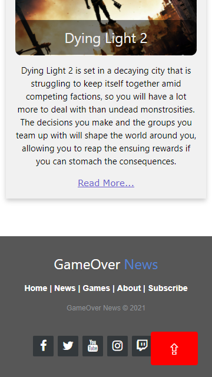
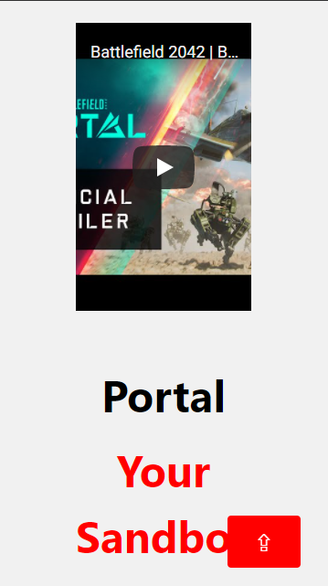
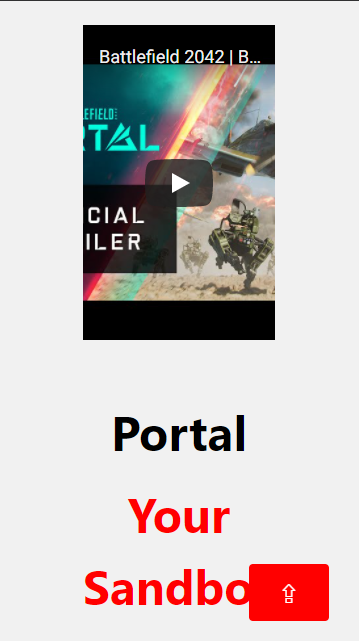

Report: Large Coursework
NAME: Vincent Tan De Hao UOL Student Number: 210201325
Introduction: What is the essential story being told by your site and what type of structure did you choose to implement.
Currently, game enthusiasts will have to find details about new games from various websites and online reviews. I am doing an online magazine that consolidates the list of highly anticipated games that are coming out each year. This is a site for users to gather information on new gaming titles and what to expect from them. The website has a top-down hierarchy structure. At the top is the title of the magazine “GameOver News”. Users will be able to navigate the site using the navigation bar situated below the title. The navigation bar consist of a home button, a news button, a drop down list containing the games listed, an about button, and a subscribe button. Scrolling down to the end will enable the back to top button to appear at the bottom right.
State 3 things that have inspired you when creating your website. These could include guest speakers, other websites, artists, developers etc.
As a gamer, I have played various number of games, some of which were excellent while others fell short of what was to be expected and few were downright disappointing. With many new and exciting games coming out every year, it is a tough choice to choose which games to get. In my younger days, there were a couple of times where I have regretted purchasing a game as it was not what it seems to be or it turns out I lost interest in it due to poor story/mechanics/etc . Thus, this led me to source for various news and articles about future games before considering getting them. I have seen videos, reviews and articles about games from sites such as PC Gamer, IGN Southeast Asia, seeing if it will be something I would play. As such, for this coursework, I decided on an online magazine, covering about the latest upcoming games.
State 3 ways in which your site is accessible.
Most of the demographic who will be visiting my website would be using devices such as PC or mobile phones, as such I ensure that my website should be displayable on the browsers of the following devices such as PC / Laptop / Mobile Phone / Tablets. I used @media query to change the font size and change the size or position of certain elements of the site to work with various small screen displays. I also added in the alt text description for users that have poor vision and requires the usage of screen readers for the pictures.
State 3 ways in which you have considered usability in your site.
One usability would be that when the user has scrolled down far enough, there will be a pop-up arrow button at the bottom right to help the user automatically scroll to the top when they click on it. There is a subscribe form for them to sign up to notify them about updates or news for the various games if they are interested. The user can find out more on the games listed by using the navigation bar or by clicking on the read more listed under the games and in about just 2 clicks, they can read about the various infomation provided.
State 3 things you had to learn/find out by yourself when creating your site, and describe how you did that (i.e. what searches you did, any new tools/techniques you learned, any changes/adaptations you made to a particular resource to make it work with your site).
I learned that java codes will interfere with other java codes even though it is not in use in another page. By using the console log, I was able to determine that the slideshow code was interfering and causing errors on the other pages as there was no slideshow function on them and this results in some of the other codes not functioning. I learned that by compressing the images, to reduce the size of it, by a certain amount, the image stills retain its quality and this helps in speeding up the loading time of the images. Using gifs instead of a video to reduce the user's loading time, to show a snippet of what the game will look like.
What aspect(s) of your work do you think worked well and why?
The background title at the top with the gradient fall off aesthetically looks good making the website look like a news webpage. I believe that my clickable automatic slideshow worked well as having some sort of animation can keep the user interested on the page itself and also because it took some researching as well as some debugging together to make it functional. The back to top arrow button is very useful when users have scrolled far down as it will bring them back to the top for them to see the navigation bar. The column cards below the slideshow works well as it gives user the base summary of the video game and if they want to find out more, they can simply click the picture or the "read more...". The zig zag style to show information gives the webpage a more unique look as oppose to just having the information cluttered into a single column.
What aspect(s) of your work could be improved, and how might you do things differently another time?
I believe that my subscribe page could be improve as I have no clue as how to make it function as well as checking for the validity of the text and the script to handle it seems to not work for me. As a result, I opt to use the “required” method to handle the mandatory requirements. I will have to research more on the javascript side on the functions to make it run properly and implement proper validity checks. I had a tough time implementing more of the read more button per page as I realise there was some sort of additional requirement for javascript/css that needed to be added to add more of it or that there was some conflict which I did not have the time to implement it. In another time, I would have research and study the code more carefully before addding it to the website.
What resources were used when creating your work?
Display Images inside Border Slideshow Clickable auto slideshow For decreasing the size of the images For reducing video size Font family reference Footer example code Read more/less code Zig Zag Layout Code Read more code Sign up form Column cards -------Reference Websites------- https://www.pcgamer.com/ https://www.gameinformer.com/ https://www.gamesradar.com/ https://sea.ign.com/ HALO - YouTube Halo multiplayer gameplay video Halo Story Trailer Halo Infinite | Xbox Information Battlefield - YouTube Battlefield 2042 reveal trailer Battlefield gameplay trailer Battlefield Portal trailer Battlefield 2042 | Information Horizon Forbidden West | Information Announcement trailer State of play gameplay Dying Light - YouTube Dying Light 2 | Information Dying Light 2 gameplay trailer Dying Light E3 trailer
Appendices: Site Map, Wireframes and Mock-ups
Appendix A - Site Map :
Appendix B - Wireframes & Mock-ups
Wide-Screen Wireframe:
Index/Home
Page 1 & 2 share the same layout
Page 3
Page 5
Small-Screen Wireframe:
Index/Home
Page 1 & 2 share the same layout
Page 3
Page 5
Wide-Screen Mock-up:
Index/Home
Page 1 & 2 share the same layout

Page 3
Page 5
Small-Screen Mock-up:
Index/Home
Page 1 & 2 share the same layout
 

Page 3
Page 5
C - Acknowledgements
[1] Amanda Hurych ‘Halo Infinite Guide: Everything We Know So Far’ 2021. [Online]. Available: Halo Infinite Guide: Everything We Know So Far (thegamer.com) [Accessed: 9- Aug- 2021].
[2] ‘Halo Infinite 10K’, 2020. [Online]. Available: https://hdqwalls.com/halo-infinite-10k-wallpaper. [Accessed: 9- Aug- 2021].
[3] ‘Halo Infinite’, 2020. [Online]. Available: https://whvn.cc/kworo6. [Accessed: 9- Aug- 2021]. Published by Crossby.
[4] ‘Battlefield 2042’, 2021. [Online]. Available: https://whvn.cc/y85owd. [Accessed: 9- Aug- 2021]. Published by Scuba21.
[5] ‘Battlefield 2042 Wingsuit’, 2021. [Online]. Available: https://whvn.cc/28zlwm. [Accessed: 12- Aug- 2021]. Published by Scuba21.
[6] ‘Aloy (Horizon Series) 4k Ultra HD Wallpaper’, 2020. [Online]. Available: https://wall.alphacoders.com/big.php?i=1082417. [Accessed: 16- Aug- 2021]. Published by theomeganerd.
[7] ‘Horizon II: Forbidden West’, 2020. [Online]. Available: https://whvn.cc/mdkrpy. [Accessed: 16- Aug- 2021]. Published by ThexMorgan.
[8] ‘Dying Light 2: Stay Human HD Wallpaper’, 2020. [Online]. Available: https://wall.alphacoders.com/big.php?i=1148838. [Accessed: 16- Aug- 2021]. Published by MisterInked.
[9] ‘Dying Light 2: Stay Human 8k Ultra HD Wallpaper’, 2018. [Online]. Available: https://wall.alphacoders.com/big.php?i=926738. [Accessed: 16- Aug- 2021]. Published by Deridder45.